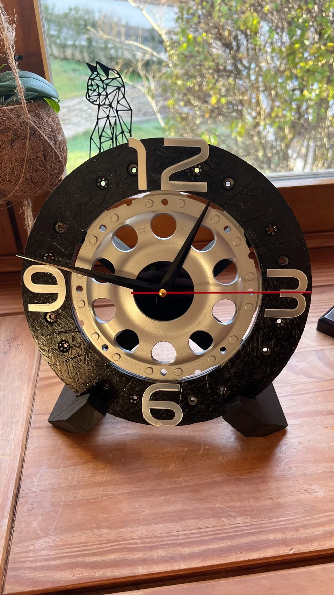
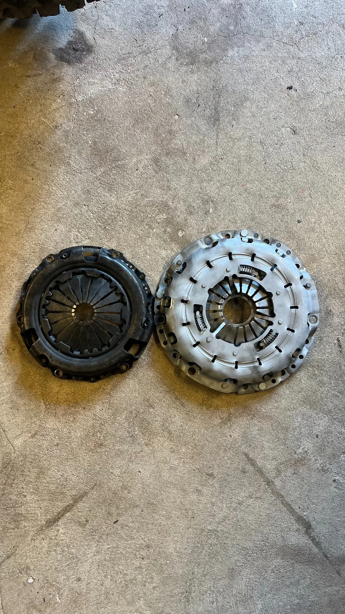

Pulse
PulseRéception équipée en son et lumière
Configuration complète avec diffusion, effets lumineux et installation propre.
Réalisations
Chaque réalisation est rattachée à son univers : Pulse pour l’événementiel, Process pour l’organisation terrain, Artisanat pour la création et la fabrication.
PulseConfiguration complète avec diffusion, effets lumineux et installation propre.
 Pulse
PulseImplantation technique, pont lumière et système adapté au lieu.
 Pulse
PulseInstallation sobre pour événement, scène ou prestation technique.
 Process
ProcessIdentifier les pertes de temps, réduire les allers-retours et standardiser les étapes.
 Process
ProcessCréer des tableaux lisibles pour suivre les actions, temps, priorités et résultats.
 Process
ProcessExemple d’organisation physique avec contraintes de placement, rendu et câblage.

ArtisanatTransformation d’une pièce mécanique en objet décoratif fini.
 Artisanat
ArtisanatMise en valeur d’un objet personnel dans une composition sur mesure.

ArtisanatNettoyage, préparation et finition pour transformer ou restaurer une pièce.